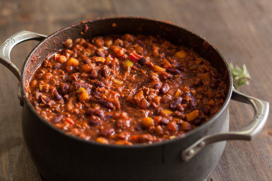

Chili Recipe

Description
Chili, a warm, spicy, and tasty dish that is perfect for winters and summer bbqs.The prep time for this dish is an easy 10 min, with a recommended cook time of 6-8 hours. Cooking the chili longer will really bring out the spices in the dish. This dish is best served for up to 8 people. We highly
recommend adding sour cream or cheese to the dish.
Ingredients Chili
- 2 tablespoons olive oil
- 1 large onion, chopped
- 2 cloves garlic, minced, or more to taste
- 2 pounds lean ground beef
- 2 (16 ounce) cans kidney beans,rinsed, and drained
- 1 (28 ounce) can tomato puree
- 1 cup of water
- 1(4 ounce) can chopped green chile peppers
- 2 tablespoons mild chili powder
- 2 teaspoons salt
- 2 teaspoons ground cumin
- 1 teaspoon ground black pepper
Steps
- Heat Oil in a large skillet over medium-low heat. Add onion and garlic; cook and stir until onion is translucent, about 5 minutes. Add ground beef; cook and stir until browned, 8 to 10 minutes
- Transfer beef mixture to a 6-quart slow cooker. Stir in kidney beans, diced tomatoes, tomato puree, water, green chile peppers, chili powder, salt, cumin, and black pepper.
- Cook on Low until flvaors combine, 6 to 8 hours.